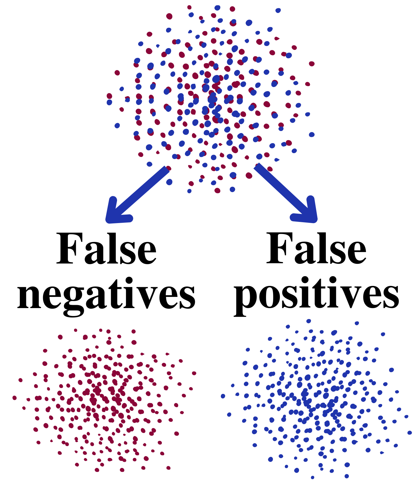

Machine Learning
Machine Learning refers to computer algoriths which can improve themselves automatically through experience in the form of data, acknowledging complex patterns for decision making based in the given data.
Machine Learning refers to computer algoriths which can improve themselves automatically through experience in the form of data, acknowledging complex patterns for decision making based in the given data.
Such learning process could be:
Inputs required
Via interaction with the surroundings
Requiring inputs and targets. The dataset is divided in: training and test data (see Fig. 1).
The main goal is to construct a relationship to provide an output (target prediction) for any new M instance (with its N features). Such training could be oriented for classification or regression. In both cases, several representations for learners existis, the chosen for this works is the logistic regression.
Logistic regression is the simplest statistical model to predict a categorical value. In the machine learning domain, it could be considered the simplest classifier.
It is defined by a sigmoid function (Fig 2), which computes the probability of a given observation to be 1.
0 = normal event
1 = anomaly event
The parameter ùõΩ is adjusted using a loss function (Fig 3) and optimized using a cost function (Fig. 4), it can be noticed that is an aggregation function for classifications and misclassifications.
The multi-objective optimization method is an attractive feature when the problem presents multiple conflicting objectives, configuring a MOP (multi-objective problem). This tool handles the objectives simultaneously, generating a set of Pareto optimal solutions, each defining an objective vector in the Pareto front.
Normally, FP and FN are conflicting objectives in the analysis, and the trade-offs between them should be minimized. Instead of using an aggregation function to optimize the logistic regression for correct and incorrect classifications for FN and FP, this performance was evaluated through multi-objective optimization (See Fig. 5).
Optimisation algorithm: spMODEx. Default values for hyper-parameters are used, and 3e4 function evaluations are used to approximate the Pareto front.
Visualisation tool: 2D plots, parallel coordinates and boxplots.
This works use real-word data, from the major german water supplier, generated in a research project on drinking water.
The data is analyzed by the following features:
| Parameter | Unit | Description |
|---|---|---|
| Time | datetime | Time Stamp |
| WT | °C | Water Temperature |
| ClO2(1), ClO2(2) | mg/l | Chlorine Dioxide (2 values) |
| pH | pH | pH Value |
| Redox | mV | Redox Potential |
| EC | μS/cm | Conductivity |
| TURB | NTU | Turbidity |
| FR(1), FR(2) | m³/h | Water Flow Rate (2 values) |
| EVENT | binary | Anomaly Event |